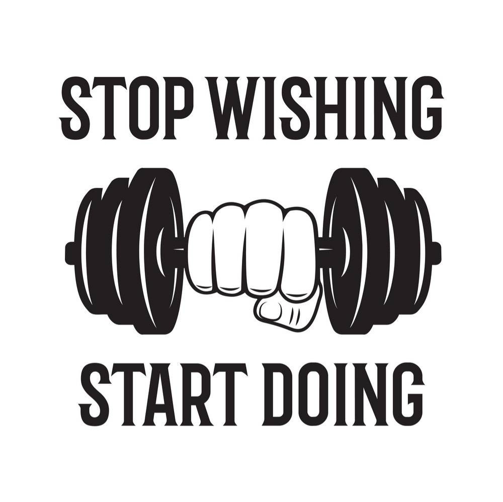

HOME
ARTICLES
HABITS
SKILLS
QUOTES
BOOKS
CONTACT
QUOTES
"You fail only if you stop writing.”
~
Ray Bradbur
"Get it down. Take chances. It may be bad, but it's the only way you can do anything really good."
~
William Faulkner
“Don’t bend; don’t water it down; (and) don’t try to make it logical; don’t edit your own soul according to the fashion. Rather, follow your most intense obsessions mercilessly.”
~
Franz Kafka
"Believe in yourself! Have faith in your abilities! Without a humble but reasonable confidence in your own powers, you cannot be successful or happy."
~
Norman Vincent Peale
“90 percent perfect and shared with the world always changes more lives than 100 percent perfect and stuck in your head.”
~
Jon Acuff
"If there's a book that you want to read, but it hasn't been written yet, then you must write it."
~
Toni Morrison
“Inspiration may sometimes fail to show up for work in the morning, but determination never does.”
~
K.M. Weiland
Most Important Inspirational Ideas-
"We are what we think."
~
Buddha
"Powerful dreams inspire powerful action."
~
Jonathan Lockwood Huie

“Love me or hate me, both are in my favor, if you love me, I’ll always be in your heart, if you hate me, I’ll always be in your mind.”
~
william shakespeare
"I think therefore I am."
~
Rene Descartes
"All limitations are self-imposed."
~
Oliver Wendell Holmes
"Imagination is greater than detail."
~
Albert Einstein